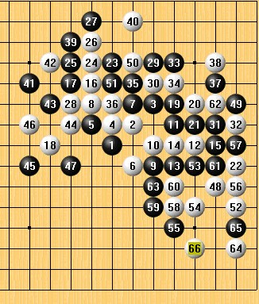

新手如何学计算力
#1 新手如何学计算力作者：茗弈小刀 发表时间：2009-6-22 14:05:34
作为新手的我，下棋的时候很迷惘，下到一半的时候，就不知道如何下的，一盘下完了，都不知道自己在下什么，时常在想，何为对弈，总是不得而知，一次和我的跆拳道实战中，我明白了，其它对弈就是和自己对，后来发现了这点，就想到了如何学习计算力，以下纯属个人想法，如果玷污了你们的眼睛的话，就用鸡蛋来砸我吧!工具: Renlib (不要一边打开谱一边想，这样子你会有一种先入为主的想法)
准备工作：放松，不要想其它的，就是棋盘（打谱工具）和棋子，把手机的电池和电话线扒掉，音箱关掉，灯也关掉，营造一种静的氛围 不要让自己被打扰，
心境： 深呼吸，让自己宁静下来，不喜不悲，冷静 不要让冲动的心打乱你的思维，（冲动是魔鬼）
想法：把子当成自己身体的一部分，下这个子要达到什么目的，不要浪费自己的子。
以上为准备工作现在我们来开始，首先我们来开始找一个对手下棋，当自己落下
第一子的时候，把RENLIB打开新建一个新的开局，按照自己和对手的对局来打，
对弈到第三手的时候，用打谱工具把自己能想到的点，在谱上标一下，打一个点
的时候，看对手有几种走法，每一种都一想到第十手，也就是在十手之前自己脑
海里有一个棋形，（对弈就是和自己弈，所以要把对手当成自己，当然对手也有
自己的思维，所以要随时应变，以不变对万变，保持良好的心境）到十手的时候
，此时把打谱工具拿出来，分析一下，自己和对手的最优区域在那，进攻方如何
把优势扩大，扩大后对手有几种走法，用打谱工具来自己想一下，看看能不能想
出胜法，自己这样子走，对手有没有反，或者其它的妙手来牵制自己，作为守方
，如何去化解对方的优势，对方的最优点在那，是否抢占，自己这样子走，对手
会不会胜，通过交换是否能达到平衡，或者自己优，抑或是对方优，把自己的想
的在打谱工具上都打出来，这是一个很难的过程，自己要不段的想，不段的去解
对手给出的招，和自己的招给对手带来那些麻烦。
下面以一个图来作为我的对上面东西的解释，

第一步先打开RENLIB,对手开了一个长星开局，（遇到自己不熟的局面，尽量把它转化成自己熟的局面，减少自己的失误，，对弈当中经常出现）对手下到11手的时候，我下12的目的是为了把黑棋上下断开，在一定区域内，把它分成二部分，（防守当中阻隔分断都是常用的）
果如我所料黑走13，正好14分开 走16想拓棋，，18把下面的区域控制一下，对手的19到23在我想的范围内，，我走24 对手走了一个25，我冲一个四（中盘对局当中，三是进攻的和防守的利器，所以我就26冲四，把对手左右分开）这样子我就把黑棋局限在了一个区域内，后来走了一个28，28我觉得自己走的太大意了，所以现在看了有点后悔，对手走了一个29，做杀，同时形成一个眠三跳二（我想对手会走这一个29，同时我会想到黑一定会用下面的11和21这个活二来做文章）所以当对手走到37都在我想之内，因为这样子走我觉得是我想出最好的走法，（自我感安慰当中） 当中我走到38手走过，我想对手应该会进行左右的链接，，对手做了一个杀，所以我就防了一个手，但是41跳三，出乎我的意料之中。但是我没有在意，因为此时我可以感觉到我占点优，但是不太优，所以我觉得对手会控一下走一个43，我顺式活了一个三（注，因为前前面说过，三是进攻和防守的利器，所以先活一个，对手防下，我想到了，这样子我也可以控一下上面对活的一个死三，46走得保守一点，47，但是我没有去管对手的47，因为此时我想到了，活二没有连接等同与给对手添砖加瓦）所以走了一个48，，对手走了一个49（看到这个49，我想大家明白，我刚刚活了一个三的含义了吧，嘻嘻，在我的计算之内，开心）下面白就展开了进攻，一举拿下，嘻嘻，，，
总结：无论对手是否出现弱招，这个不重要，关键是你能否抓住 ，利用，利用过后是否有后续手段，这都离不开计算力，但是计算力不是天生就会，是一步步来的，所以才想出这个笨方法。。。（好头脑不如烂笔头）
感谢大家和评委老师提出意见，QQ:532200923
［ 有志青年 于 2009-3-18 13:28:11 时奖励此帖[金币加 20 威望加1
#2 Re:新手如何学计算力作者：不知 发表时间：2009-6-22 14:28:05
 突然刷出一堆帖..吓了一跳..
突然刷出一堆帖..吓了一跳..
JJ加油..祝茗弈的各位朋友棋艺越来越好..
学棋不应急..强行刷谱不如慢慢体会..
棋是需要积累的..
#3 Re:新手如何学计算力作者：茗弈小刀 发表时间：2009-6-22 14:29:28
 谢谢弟弟！
谢谢弟弟！